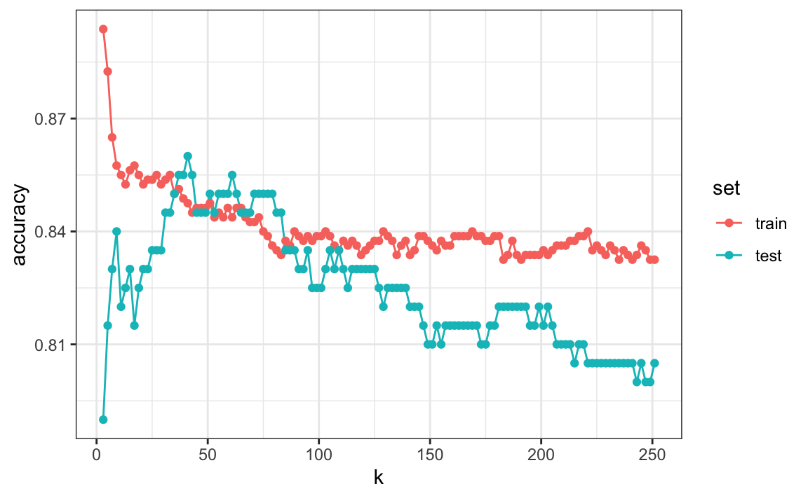

28 Cross validation
In this chapter we introduce cross validation, one of the most important ideas in machine learning. Here we focus on the conceptual and mathematical aspects. We will describe how to implement cross validation in practice with the caret package later, in Section Section 30.1.2) in the next chapter. To motivate the concept, we will use the two predictor digits data presented in Section @ref(two-or-seven) and introduce, for the first time, an actual machine learning algorithm: k-nearest neighbors (kNN.
28.1 Motivation with k-nearest neighbors
Let’s start by loading the data and showing a plot of the predictors with outcome represented with color.
We will use these data to estimate the conditional probability function
\[ p(x_1, x_2) = \mbox{Pr}(Y = 1 \mid X_1 = x_1 , X_2 = x_2). \] as defined in Section Section 27.6). With k-nearest neighbors (kNN) we estimate \(p(x_1, x_2)\) in a similar way to bin smoothing. However, as we will see, kNN is easier to adapt to multiple dimensions. First we define the distance between all observations based on the features. Then, for any point \((x_1,x_2)\) for which we want an estimate of \(p(x_1, x_2)\), we look for the \(k\) nearest points to \((x_1,x_2)\) and then take an average of the 0s and 1s associated with these points. We refer to the set of points used to compute the average as the neighborhood. Due to the connection we described earlier between conditional expectations and conditional probabilities, this gives us a \(\hat{p}(x_1,x_2\), just like the bin smoother gave us an estimate of a trend. As with bin smoothers, we can control the flexibility of our estimate, in this case through the \(k\) parameter: larger \(k\)s result in smoother estimates, while smaller \(k\)s result in more flexible and more wiggly estimates.
To implement the algorithm, we can use the knn3 function from the caret package. Looking at the help file for this package, we see that we can call it in one of two ways. We will use the first in which we specify a formula and a data frame. The data frame contains all the data to be used. The formula has the form outcome ~ predictor_1 + predictor_2 + predictor_3 and so on. Therefore, we would type y ~ x_1 + x_2. If we are going to use all the predictors, we can use the . like this y ~ .. For this function, we also need to pick a parameter: the number of neighbors to include. Let’s start with the default \(k = 5\). The final call looks like this:
In this case, since our dataset is balanced and we care just as much about sensitivity as we do about specificity, we will use accuracy to quantify performance.
The predict function for knn produces a probability for each class. We keep the probability of being a 7 as the estimate \(\hat{p}(x_1, x_2)\)
y_hat_knn <- predict(knn_fit, mnist_27$test, type = "class")
confusionMatrix(y_hat_knn, mnist_27$test$y)$overall["Accuracy"]
#> Accuracy
#> 0.815In Section Section 27.1 we used linear regression to generate an estimate.
And we see that kNN, with the default parameter, already beats regression. To see why this is the case, we will plot \(\hat{p}(x_1, x_2)\) and compare it to the true conditional probability \(p(x_1, x_2)\):

We see that kNN better adapts to the non-linear shape of \(p(x_1, x_2)\). However, our estimate has some islands of blue in the red area, which intuitively does not make much sense. This is due to what we call over-training. We describe over-training in detail below. Over-training is the reason that we have higher accuracy in the train set compared to the test set:
y_hat_knn <- predict(knn_fit, mnist_27$train, type = "class")
confusionMatrix(y_hat_knn, mnist_27$train$y)$overall["Accuracy"]
#> Accuracy
#> 0.882
y_hat_knn <- predict(knn_fit, mnist_27$test, type = "class")
confusionMatrix(y_hat_knn, mnist_27$test$y)$overall["Accuracy"]
#> Accuracy
#> 0.81528.2 Over-training
Over-training is at its worst when we set \(k = 1\). With \(k = 1\), the estimate for each \((x_1, x_2)\) in the training set is obtained with just the \(y\) corresponding to that point. In this case, if the \((x_1, x_2)\) are unique, we will obtain perfect accuracy in the training set because each point is used to predict itself. Remember that if the predictors are not unique and have different outcomes for at least one set of predictors, then it is impossible to predict perfectly.
Here we fit a kNN model with \(k = 1\):
knn_fit_1 <- knn3(y ~ ., data = mnist_27$train, k = 1)
y_hat_knn_1 <- predict(knn_fit_1, mnist_27$train, type = "class")
confusionMatrix(y_hat_knn_1, mnist_27$train$y)$overall[["Accuracy"]]
#> [1] 0.996However, the test set accuracy is actually worse than regression:
y_hat_knn_1 <- predict(knn_fit_1, mnist_27$test, type = "class")
confusionMatrix(y_hat_knn_1, mnist_27$test$y)$overall["Accuracy"]
#> Accuracy
#> 0.73We can see the over-fitting problem in this figure.

The black curves denote the decision rule boundaries.
The estimate \(\hat{p}(x_1, x_2)\) follows the training data too closely (left). You can see that in the training set, boundaries have been drawn to perfectly surround a single red point in a sea of blue. Because most points \((x_1, x_2)\) are unique, the prediction is either 1 or 0 and the prediction for that point is the associated label. However, once we introduce the training set (right), we see that many of these small islands now have the opposite color and we end up making several incorrect predictions.
28.3 Over-smoothing
Although not as badly as with the previous examples, we saw that with \(k = 5\) we also over-trained. Hence, we should consider a larger \(k\). Let’s try, as an example, a much larger number: \(k = 401\).
knn_fit_401 <- knn3(y ~ ., data = mnist_27$train, k = 401)
y_hat_knn_401 <- predict(knn_fit_401, mnist_27$test, type = "class")
confusionMatrix(y_hat_knn_401, mnist_27$test$y)$overall["Accuracy"]
#> Accuracy
#> 0.79This turns out to be similar to regression:
#> Warning: The following aesthetics were dropped during statistical
#> transformation: fill
#> ℹ This can happen when ggplot fails to infer the correct grouping
#> structure in the data.
#> ℹ Did you forget to specify a `group` aesthetic or to convert a
#> numerical variable into a factor?
#> The following aesthetics were dropped during statistical
#> transformation: fill
#> ℹ This can happen when ggplot fails to infer the correct grouping
#> structure in the data.
#> ℹ Did you forget to specify a `group` aesthetic or to convert a
#> numerical variable into a factor?
This size of \(k\) is so large that it does not permit enough flexibility. We call this over-smoothing.
28.4 Picking the \(k\) in kNN
So how do we pick \(k\)? In principle we want to pick the \(k\) that maximizes accuracy, or minimizes the expected MSE as defined in Section 25.8. The goal of cross validation is to estimate these quantities for any given algorithm and set of tuning parameters such as \(k\). To understand why we need a special method to do this let’s repeat what we did above but for different values of \(k\):
ks <- seq(3, 251, 2)We do this using map_df function to repeat the above for each one.
library(purrr)
accuracy <- map_df(ks, function(k){
fit <- knn3(y ~ ., data = mnist_27$train, k = k)
y_hat <- predict(fit, mnist_27$train, type = "class")
cm_train <- confusionMatrix(y_hat, mnist_27$train$y)
train_error <- cm_train$overall["Accuracy"]
y_hat <- predict(fit, mnist_27$test, type = "class")
cm_test <- confusionMatrix(y_hat, mnist_27$test$y)
test_error <- cm_test$overall["Accuracy"]
tibble(train = train_error, test = test_error)
})Note that we estimate accuracy by using both the training set and the test set. We can now plot the accuracy estimates for each value of \(k\):

First, note that the estimate obtained on the training set is generally lower than the estimate obtained with the test set, with the difference larger for smaller values of \(k\). This is due to over-training. Also note that the accuracy versus \(k\) plot is quite jagged. We do not expect this because small changes in \(k\) should not affect the algorithm’s performance too much. The jaggedness is explained by the fact that the accuracy is computed on a sample and therefore is a random variable. This demonstrates why we prefer to minimize the expected loss rather than the loss we observe with one dataset.
If we were to use these estimates to pick the \(k\) that maximizes accuracy, we would use the estimates built on the test data:
Another reason we need a better estimate of accuracy is that if we use the test set to pick this \(k\), we should not expect the accompanying accuracy estimate to extrapolate to the real world. This is because even here we broke a golden rule of machine learning: we selected the \(k\) using the test set. Cross validation also provides an estimate that takes this into account.
28.5 Mathematical description of cross validation
In Section Section 25.8, we described that a common goal of machine learning is to find an algorithm that produces predictors \(\hat{Y}\) for an outcome \(Y\) that minimizes the MSE:
\[ \mbox{MSE} = \mbox{E}\left\{ \frac{1}{N}\sum_{i = 1}^N (\hat{Y}_i - Y_i)^2 \right\} \]
When all we have at our disposal is one dataset, we can estimate the MSE with the observed MSE like this:
\[ \hat{\mbox{MSE}} = \frac{1}{N}\sum_{i = 1}^N (\hat{y}_i - y_i)^2 \]
These two are often referred to as the true error and apparent error, respectively.
There are two important characteristics of the apparent error we should always keep in mind:
Because our data is random, the apparent error is a random variable. For example, the dataset we have may be a random sample from a larger population. An algorithm may have a lower apparent error than another algorithm due to luck.
If we train an algorithm on the same dataset that we use to compute the apparent error, we might be overtraining. In general, when we do this, the apparent error will be an underestimate of the true error. We will see an extreme example of this with k-nearest neighbors.
Cross validation is a technique that permits us to alleviate both these problems. To understand cross validation, it helps to think of the true error, a theoretical quantity, as the average of many apparent errors obtained by applying the algorithm to \(B\) new random samples of the data, none of them used to train the algorithm. As shown in a previous chapter, we think of the true error as:
\[ \frac{1}{B} \sum_{b = 1}^B \frac{1}{N}\sum_{i = 1}^N \left(\hat{y}_i^b - y_i^b\right)^2 \]
with \(B\) a large number that can be thought of as practically infinite. As already mentioned, this is a theoretical quantity because we only have available one set of outcomes: \(y_1, \dots, y_n\). Cross validation is based on the idea of imitating the theoretical setup above as best we can with the data we have. To do this, we have to generate a series of different random samples. There are several approaches we can use, but the general idea for all of them is to randomly generate smaller datasets that are not used for training, and instead used to estimate the true error.
28.6 K-fold cross validation
The first one we describe is K-fold cross validation. Generally speaking, a machine learning challenge starts with a dataset (blue in the image below). We need to build an algorithm using this dataset that will eventually be used in completely independent datasets (yellow).

But we don’t get to see these independent datasets.

So to imitate this situation, we carve out a piece of our dataset and pretend it is an independent dataset: we divide the dataset into a training set (blue) and a test set (red). We will train our algorithm exclusively on the training set and use the test set only for evaluation purposes.
We usually try to select a small piece of the dataset so that we have as much data as possible to train. However, we also want the test set to be large so that we obtain a stable estimate of the loss without fitting an impractical number of models. Typical choices are to use 10%-20% of the data for testing.

Let’s reiterate that it is indispensable that we not use the test set at all: not for filtering out rows, not for selecting features, nothing!
Now this presents a new problem because for most machine learning algorithms we need to select parameters, for example the number of neighbors \(k\) in k-nearest neighbors. Here, we will refer to the set of parameters as \(\lambda\). We need to optimize algorithm parameters without using our test set and we know that if we optimize and evaluate on the same dataset, we will overtrain. This is where cross validation is most useful.
For each set of algorithm parameters being considered, we want an estimate of the MSE and then we will choose the parameters with the smallest MSE. Cross validation provides this estimate.
First, before we start the cross validation procedure, it is important to fix all the algorithm parameters. Although we will train the algorithm on the set of training sets, the parameters \(\lambda\) will be the same across all training sets. We will use \(\hat{y}_i(\lambda)\) to denote the predictors obtained when we use parameters \(\lambda\).
So, if we are going to imitate this definition:
\[ \mbox{MSE}(\lambda) = \frac{1}{B} \sum_{b = 1}^B \frac{1}{N}\sum_{i = 1}^N \left(\hat{y}_i^b(\lambda) - y_i^b\right)^2 \]
we want to consider datasets that can be thought of as an independent random sample and we want to do this several times. With K-fold cross validation, we do it \(K\) times. In the cartoons, we are showing an example that uses \(K = 5\).
We will eventually end up with \(K\) samples, but let’s start by describing how to construct the first: we simply pick \(M = N/K\) observations at random (we round if \(M\) is not a round number) and think of these as a random sample \(y_1^b, \dots, y_M^b\), with \(b = 1\). We call this the validation set:

Now we can fit the model in the training set, then compute the apparent error on the independent set:
\[ \hat{\mbox{MSE}}_b(\lambda) = \frac{1}{M}\sum_{i = 1}^M \left(\hat{y}_i^b(\lambda) - y_i^b\right)^2 \]
Note that this is just one sample and will therefore return a noisy estimate of the true error. This is why we take \(K\) samples, not just one. In K-cross validation, we randomly split the observations into \(K\) non-overlapping sets:

Now we repeat the calculation above for each of these sets \(b = 1,\dots,K\) and obtain \(\hat{\mbox{MSE}}_1(\lambda),\dots, \hat{\mbox{MSE}}_K(\lambda)\). Then, for our final estimate, we compute the average:
\[ \hat{\mbox{MSE}}(\lambda) = \frac{1}{K} \sum_{b = 1}^K \hat{\mbox{MSE}}_b(\lambda) \]
and obtain an estimate of our loss. A final step would be to select the \(\lambda\) that minimizes the MSE.
We have described how to use cross validation to optimize parameters. However, we now have to take into account the fact that the optimization occurred on the training data and therefore we need an estimate of our final algorithm based on data that was not used to optimize the choice. Here is where we use the test set we separated early on:

We can do cross validation again:

and obtain a final estimate of our expected loss. However, note that this means that our entire compute time gets multiplied by \(K\). You will soon learn that performing this task takes time because we are performing many complex computations. As a result, we are always looking for ways to reduce this time. For the final evaluation, we often just use the one test set.
Once we are satisfied with this model and want to make it available to others, we could refit the model on the entire dataset, without changing the optimized parameters.

Now how do we pick the cross validation \(K\)? Large values of \(K\) are preferable because the training data better imitates the original dataset. However, larger values of \(K\) will have much slower computation time: for example, 100-fold cross validation will be 10 times slower than 10-fold cross validation. For this reason, the choices of \(K = 5\) and \(K = 10\) are popular.
One way we can improve the variance of our final estimate is to take more samples. To do this, we would no longer require the training set to be partitioned into non-overlapping sets. Instead, we would just pick \(K\) sets of some size at random.
One popular version of this technique, at each fold, picks observations at random with replacement (which means the same observation can appear twice). This approach has some advantages (not discussed here) and is generally referred to as the bootstrap. In fact, this is the default approach in the caret package. We describe how to implement cross validation with the caret package in the next chapter. In the next section, we include an explanation of how the bootstrap works in general.
You are ready to try exercises 1 through 8
28.7 Bootstrap
Suppose the income distribution of your population is as follows:
set.seed(1995)
n <- 10^6
income <- 10^(rnorm(n, log10(45000), log10(3)))
qplot(log10(income), bins = 30, color = I("black"))
#> Warning: `qplot()` was deprecated in ggplot2 3.4.0.
The population median is:
m <- median(income)
m
#> [1] 44939Suppose we don’t have access to the entire population, but want to estimate the median \(m\). We take a sample of 100 and estimate the population median \(m\) with the sample median \(M\):
Can we construct a confidence interval? What is the distribution of \(M\) ?
Because we are simulating the data, we can use a Monte Carlo simulation to learn the distribution of \(M\).
library(gridExtra)
B <- 10^4
M <- replicate(B, {
X <- sample(income, N)
median(X)
})
p1 <- qplot(M, bins = 30, color = I("black"))
p2 <- qplot(sample = scale(M), xlab = "theoretical", ylab = "sample") +
geom_abline()
grid.arrange(p1, p2, ncol = 2)
If we know this distribution, we can construct a confidence interval. The problem here is that, as we have already described, in practice we do not have access to the distribution. In the past, we have used the Central Limit Theorem, but the CLT we studied applies to averages and here we are interested in the median. We can see that the 95% confidence interval based on CLT
is quite different from the confidence interval we would generate if we know the actual distribution of \(M\):
The bootstrap permits us to approximate a Monte Carlo simulation without access to the entire distribution. The general idea is relatively simple. We act as if the observed sample is the population. We then sample (with replacement) datasets, of the same sample size as the original dataset. Then we compute the summary statistic, in this case the median, on these bootstrap samples.
Theory tells us that, in many situations, the distribution of the statistics obtained with bootstrap samples approximate the distribution of our actual statistic. This is how we construct bootstrap samples and an approximate distribution:
Note a confidence interval constructed with the bootstrap is much closer to one constructed with the theoretical distribution:
For more on the Bootstrap, including corrections one can apply to improve these confidence intervals, please consult the book An introduction to the bootstrap by Efron, B., & Tibshirani, R. J.
Note that we can use ideas similar to those used in the bootstrap in cross validation: instead of dividing the data into equal partitions, we simply bootstrap many times.
28.8 Exercises
Generate a set of random predictors and outcomes like this:
1. Because x and y are completely independent, you should not be able to predict y using x with accuracy larger than 0.5. Confirm this by running cross validation using logistic regression to fit the model. Because we have so many predictors, we selected a random sample x_subset. Use the subset when training the model. Hint: use the caret train function. The results component of the output of train shows you the accuracy. Ignore the warnings.
2. Now, instead of a random selection of predictors, we are going to search for those that are most predictive of the outcome. We can do this by comparing the values for the \(y = 1\) group to those in the \(y = 0\) group, for each predictor, using a t-test. You can perform this step like this:
devtools::install_bioc("genefilter")
install.packages("genefilter")
library(genefilter)
tt <- colttests(x, y)Create a vector of the p-values and call it pvals.
3. Create an index ind with the column numbers of the predictors that were “statistically significantly” associated with y. Use a p-value cutoff of 0.01 to define “statistically significant”. How many predictors survive this cutoff?
4. Re-run the cross validation but after redefining x_subset to be the subset of x defined by the columns showing “statistically significant” association with y. What is the accuracy now?
5. Re-run the cross validation again, but this time using kNN. Try out the following grid of tuning parameters: k = seq(101, 301, 25). Make a plot of the resulting accuracy.
6. In exercises 3 and 4, we see that despite the fact that x and y are completely independent, we were able to predict y with accuracy higher than 70%. We must be doing something wrong then. What is it?
- The function
trainestimates accuracy on the same data it uses to train the algorithm. - We are over-fitting the model by including 100 predictors.
- We used the entire dataset to select the columns used in the model. This step needs to be included as part of the algorithm. The cross validation was done after this selection.
- The high accuracy is just due to random variability.
7. Advanced. Re-do the cross validation but this time include the selection step in the cross validation. The accuracy should now be close to 50%.
8. Load the tissue_gene_expression dataset. Use the train function to predict tissue from gene expression. Use kNN. What k works best?
9. The createResample function can be used to create bootstrap samples. For example, we can create 10 bootstrap samples for the mnist_27 dataset like this:
set.seed(1995)
indexes <- createResample(mnist_27$train$y, 10)How many times do 3, 4, and 7 appear in the first re-sampled index?
10. We see that some numbers appear more than once and others appear no times. This has to be this way for each dataset to be independent. Repeat the exercise for all the re-sampled indexes.
11. Generate a random dataset like this:
y <- rnorm(100, 0, 1)Estimate the 75th quantile, which we know is:
qnorm(0.75)with the sample quantile:
quantile(y, 0.75)Run a Monte Carlo simulation to learn the expected value and standard error of this random variable.
12. In practice, we can’t run a Monte Carlo simulation because we don’t know if rnorm is being used to simulate the data. Use the bootstrap to estimate the standard error using just the initial sample y. Use 10 bootstrap samples.
13. Redo exercise 12, but with 10,000 bootstrap samples.